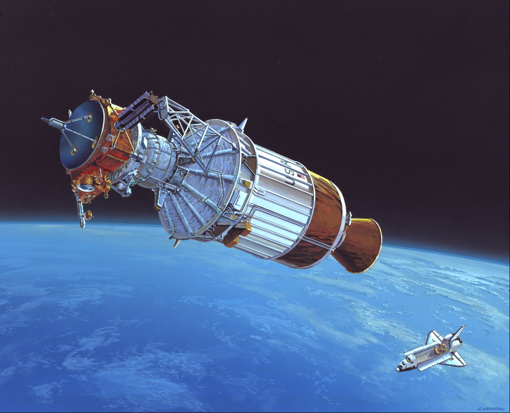
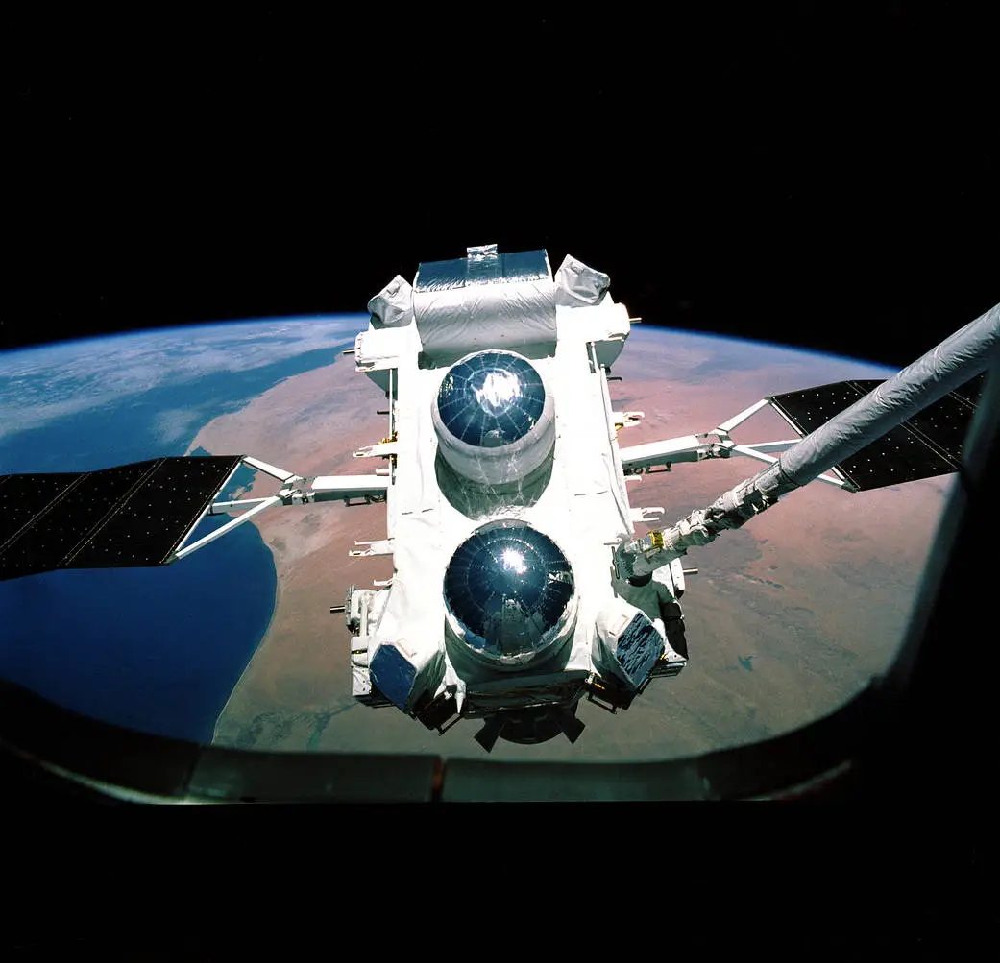
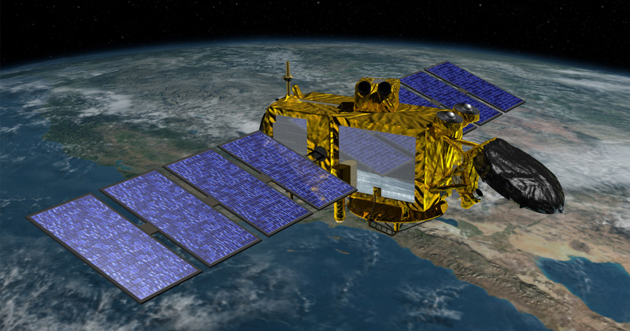
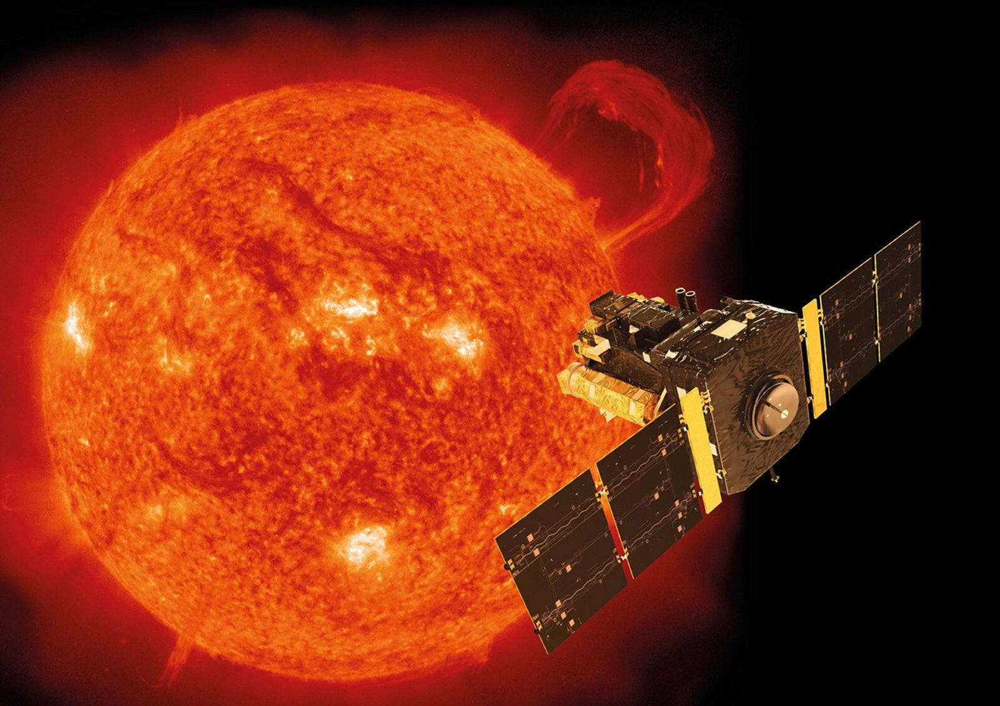
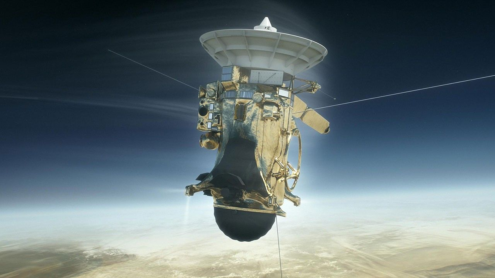
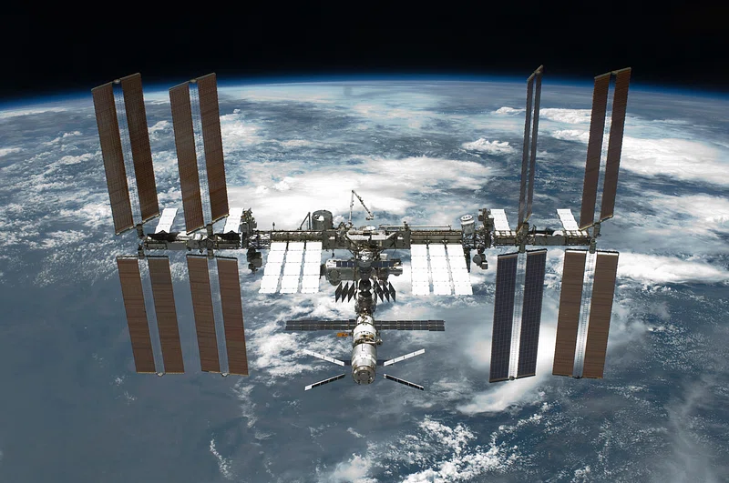

☰
˟
1990s
|
Home
Home
1960
1970
1980
1990
2000
2010
2020
1960
1970
1980
1990
2000
2010
2020
Browser no support
◀
Hubble
April 24th, 1990
Ulysses
October 6th, 1990

Galileo
October 18th, 1989
Compton
April 5th, 1991

Topex/Poseidon
August 10th, 1992

SOHO
December 2nd, 1995

Cassini
October 15th, 1997

ISS Begins
November 20th, 1998
